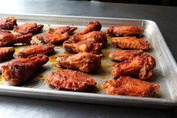

Chennai Chicken Wings

Description
A football snack from the land of
cricket, these gluten-free spicy wings
are inspired by one of my favorite Indian
restaurants. As usual, feel free to alter
the spice amounts as you see fit, but as I
said in the video, do not skip the rice
vinegar sauce.
Ingredient
- 2 tablespoons cornstarch
- 2 tablespoons rice flour
- 4 teaspoons cayenne pepper
- 4 teaspoons paprika
- 4 teaspoons ground cumin
- 4 teaspoons garam masala
- 1 teaspoon ground turmeric
- 2 teaspoons freshly ground black pepper
- 4 teaspoons kosher salt
For the Sauce
- 1/2 cup seasoned rice vinegar
- 2 tablespoons thinly sliced red onion
- 1 tablespoon thinly sliced ginger
- 1/2 tablespoon minced fresh chives
- 2 teaspoons sambal chili paste
- 1/2 teaspoon red pepper flakes
- 4 pounds chicken wings
- 1 teaspoon vegetable oil, or as needed
For the Ginger Oil
- 1 tablespoon freshly grated ginger
- 2 tablespoons vegetable oil
Steps
- Preheat the oven to 450 degrees F (230 degrees C).
- Combine cornstarch and rice flour in a bowl. Add cayenne pepper, paprika, cumin, garam masala, turmeric, black pepper, and salt. Whisk the spicy chicken coating until nicely blended. Set aside.
- Pour rice vinegar into another bowl. Add red onion and sliced ginger. Toss in chives, sambal, and red pepper flakes. Stir the vinegar sauce until well combined.
- Add wings to the spice coating in batches. Flip bowl repeatedly to toss the wings until thoroughly coated. Transfer wings onto nonstick baking sheets. Drizzle vegetable oil on top.
- Bake in the center of the preheated oven for 15 minutes.
- Meanwhile, mix grated ginger and 2 tablespoons oil together. Turn wings over and brush the ginger oil on top.
- Continue baking until dry and browned, 15 to 20 minutes more. An instant-read thermometer inserted near the bone should read 165 degrees F (74 degrees C).
- Flip wings over into the oils and let rest for 3 to 4 minutes. Scrape a fork over the wings to test for crunchiness.
- To enjoy the wings 'wet,' place a portion of the wings into a bowl and spoon in some of the vinegar sauce. Toss until coated. For 'dry'-style, plate the dry wings and simply dip into the sauce.